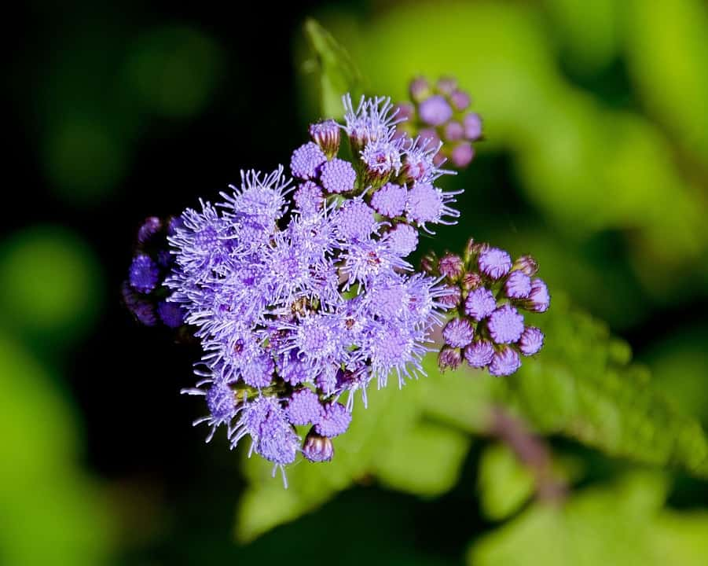

Ageratum is a tough plant that is a favorite for many gardens. These beautiful blue annuals are known for their powder puff blooms.
- Plant in full sun or partial shade.
- Needs well-drained soil.
- Blooms in mid-summer to mid-fall.

Aconite flowers are also known as winter aconite. They spread easily and can be planted as tubers or seeds. Aconite is often found growing in patches and is spring’s first flower.
Alstroemeria is a flower commonly used in floral arrangements due to its variation in colors and its ability to be dyed. Their blooms make it easy for florists to create bouquets such as “100 blooms.”
Aconite

Alstromeria

Ageratum
This flower shop provides you with so many choices to buy what you want...